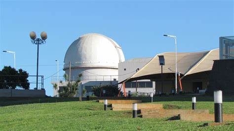

Observatorio de las Misiones
Nosotros
Noticias
Galeria
Eventos
Nuestras Imágenes

Descripción de la imagen 1
Descripción de la imagen 2
Descripción de la imagen 3
Descripción de la imagen 4
Descripción de la imagen 5
Descripción de la imagen 6
Descripción de la imagen 7
Descripción de la imagen 8
Descripción de la imagen 9